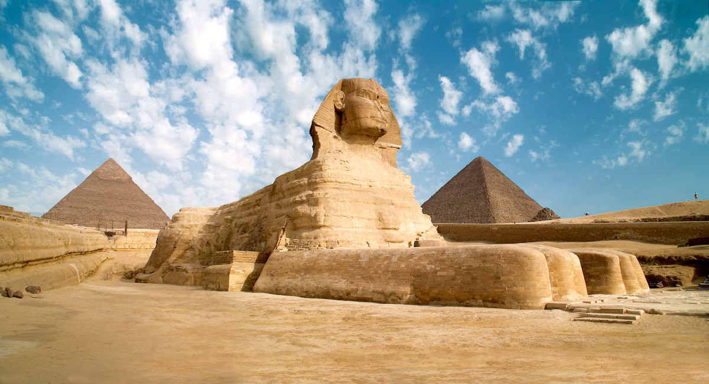

A Arte Egípcia nasceu há mais de 3000 anos a.C. e está ligada à religiosidade, visto que a maior parte das suas estátuas, pinturas, monumentos e obras arquitetônicas se manifesta em temas religiosos.
Assim, o interior dos templos, bem como as peças ou espaços relacionados com o culto dos mortos, eram artisticamente elaborados. Os túmulos são um dos aspectos mais representativos da arte egípcia.
Isso porque os egípcios acreditavam na imortalidade da alma e que ela poderia sofrer eternamente, caso o corpo fosse profanado.
Daí decorre a mumificação e o caráter monumental do local onde as múmias eram colocadas, cujo objetivo estava voltado para protegê-las pela eternidade.
O Nilo é o rio mais extenso do mundo. Situado no nordeste do continente africano, sua nascente está a sul da linha do Equador e sua foz ocorre no mar Mediterrâneo.
O rio Eufrates, é o mais longo e um dos mais historicamente importantes rios da Ásia Ocidental. Juntamente com o Tigre, é um dos dois rios que definem a Mesopotâmia.

Composta por corpo de leão e cabeça de ser humano, a esfinge de Gizé foi mandada construir possivelmente pelo faraó Quéfren, o mesmo construtor da grande pirâmide de Gizé. A grande esfinge foi construída em um único bloco de pedra e é o maior monumento dessa categoria medindo 73,5 metros de comprimento, 19,3 metros de largura e 20,22 metros de altura. As patas, porém, foram construídas com tijolos. Sua boca mede 2,30 metros, as orelhas medem 1,32 metros, enquanto que o comprimento do nariz estima-se medir 1,70 metros. Na cabeça traz um toucado real típico do antigo Egito, porém quase nada resta da serpente que ficava na testa e a barba do queixo da esfinge que, também, compunham símbolos da realeza egípcia. Possivelmente o rosto da esfinge foi esculpido de forma a representar o rosto do faraó Quéfren.